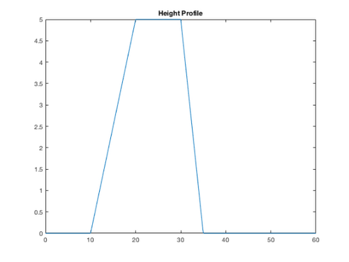
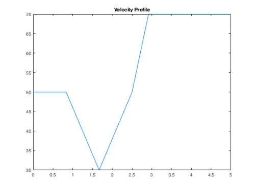
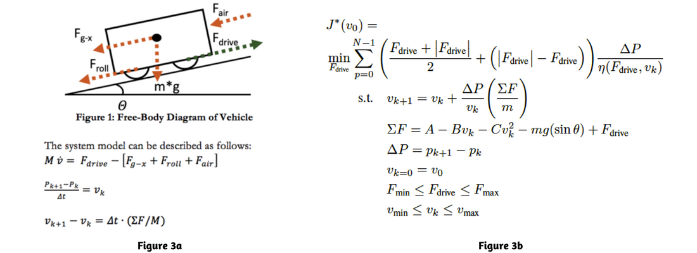
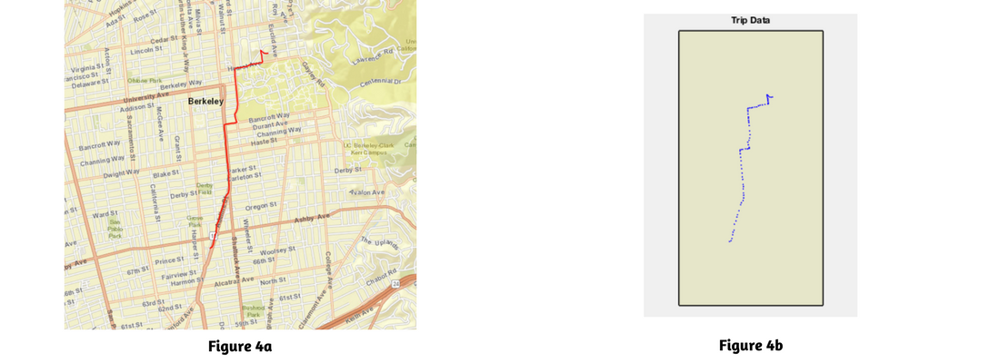
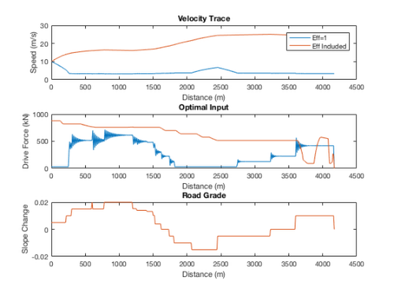
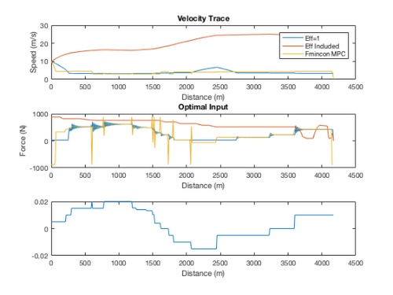
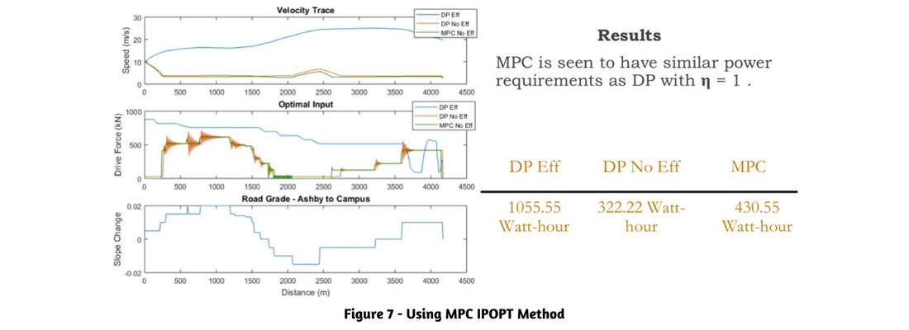

Developing an Optimal Controller for Energy Minimization of an Electric Car
ME231A/EE220B Fall 2017 Final Project
AUTHORS
Paaras Agrawal, Ehsan Arasteh, Thomas Chengattu, Chahal Neema, and Jared O'Leary
Abstract-Designing energy-efficient optimal controllers for vehicle control is an essential step towards achieving a ubiquitous, environmentally-friendly autonomous transportation model. This study explores the design and implementation of optimal control strategies that minimize the energy used by an electric car traversing a pre-established roadway. The explored control strategies dictate the vehicle's output driving force as a function of its position on the chosen roadway through the minimization of a highly non-linear cost function that is representative of total energy use. The cost function is formulated subject to speed constraints (due to road speed limits), power limitations (due to physical limitations in the motor) and non-linear system dynamics that describe the vehicle's speed as a function of driving force and road position. The study investigates the efficacy of several control strategies based on Dynamic Programming (DP) and Model Predictive Control (MPC) approaches and compares the respective results. This study finally analyzes the feasibility and pragmatism of implementing the above control approaches in various real-world scenarios. A github repo of the code we used can be found here. A summary video has been recorded on youtube
Contents
Purpose of Documentation
The following documentation is used to highlight the MATLAB methods used for the Final Project Case study. The results and findings of the report are highlighted in a seperate report. Therefore the contents of this report is to purely show the sequence of code used during our project.
clear;clc;close all;
Intution For the Problem.
When cars typically go up hills, they tend to slow down, as the force of gravity increasingly becomes a problem. The opposite happes as it rolls down a hill. We started with this intuitive understanding and modeled what our velocity profiles may look like when faced with height variations.
dt = 0.01; T_final = 5; T0 = 0; t = T0:dt:T_final; X = linspace(0,60,numel(t)); Y = zeros(numel(t),1); theta = size(numel(X),1); % Slope for i=1:numel(X) if 0<=X(i) && X(i)<=10 Y(i) = 0; theta(i) = 0; V(i) = 50; elseif 10<=X(i) && X(i)<=20 Y(i) = 0.5*(X(i)-10); theta(i) = atan(0.5); V(i) = -2*(X(i)-10)+50; elseif 20<=X(i) && X(i)<=30 Y(i) = 5; theta(i) = 0; V(i) = 2*(X(i)-20)+30; elseif 30<=X(i) && X(i)<=35 Y(i) = -(X(i)-30)+5; theta(i) = atan(-1); V(i) = 4*(X(i)-30)+50; else Y(i) = 0; theta(i) = 0; V(i) = 70; end end L = 60; % Length of the road V_mean = L/(T_final-T0); figure (1) plot(X,Y) title('Height Profile') figure (2) plot(t,V) title('Velocity Profile') 
We developed our initial models based on this intuitive understanding. Using dynamics equations, we proceeded to create the equations which would be used in our study. Much of these models were developed using the midterm examinations found in our class, and credit is soley due to our professor Francesco Borrelli.
The following figure shows a free-body diagram that explains the major forces acting on our vehicle. The vehicle is subject to some dissipative aerodynamic force Fair, rolling resistance Froll, resistance due to the horizontal component of gravity Fg-x and would be propelled forward by the electric motor, providing a force, Fdrive.

In order to minimize the amount of energy consumed by our car as it traverses across a roadway, we must minimize the Fdrive of the vehicle. We defined a cost function as follows that reflects this desire to minimize energy:
Creating a Representative Model for Route Planning
The path was created using an online path creator
T=gpxread('path.gpx'); states = geoshape(shaperead('usastatehi', 'UseGeoCoords', true)); latlim = [min(T.Latitude) max(T.Latitude)]; lonlim = [min(T.Longitude) max(T.Longitude)]; ocean = [0.7 0.8 1]; land = [0.9 0.9 0.8]; %% Overlay the GPS points on the map. webmap('World Street Map', 'WrapAround', false) colors = {'red'}; wmline(T, 'Color', colors) wmlimits(latlim, lonlim) %% Overlay the GPS points on the map. figure ax = usamap(latlim-[0.01,-.01], lonlim-[.01,-.01]); setm(ax, 'FFaceColor', ocean) geoshow(states,'FaceColor',land) geoshow(T.Latitude,T.Longitude,'DisplayType','Point','Marker','.',... 'MarkerSize',4,'MarkerEdgeColor',[0 0 1]) title('Trip Data') xlabel('Bay Area')%%
Using this path, the profile for our function was created.
function [p,slope,lat,lon,el] = gpxtoPandSlope(filename) % This function converts the raw path data into usable position and slope. % It returns p- distance from initial point and slope- sin(theta) at p. file=gpxread(filename); % read the gps file points=numel(file.Latitude); % extract number of discrete points by measuring latitude points lat=file.Latitude; % read latitudes lon=file.Longitude; % read longitudes el=file.Elevation; % read elevations p=zeros(points,1); % initialize position noise_slope=zeros(points,1); % initialize raw slope array for i=1:points-1 [a,b]=distance(lat(i+1),lon(i+1),lat(i),lon(i)); % Assigns arclen in degrees and azimuthal to a and b to deltaP=a*111120; % Converts arclen into meters deltaH=el(i+1)-el(i); % Slope if deltaP>1 % To avoid small deltaP blowing up the slope noise_slope(i)= deltaH/sqrt(deltaH^2+deltaP^2); % sin(theta) else noise_slope(i)=noise_slope(i-1); % Assign slope to the region with small deltaP end p(i+1)=p(i)+deltaP; % Increment position end slope=medfilt1(noise_slope,3); % Smoothen slope values

Developing a DP Controller Model
The DP approach involves discretizing the state (i.e., speed, v), input (i.e., driving force Fdrive), and position spaces to generate a look-up table that correlates the measured speed at a given position to the optimal input. This approach should produce not only the best solution, but rather all the solutions possible.
- 1. Define Parameters
tic load NewAshbytoBerk g = 9.8; % Gravitational acceleration in m/s^2 M = 2000; % Mass of car in kg A = 200; % Rolling resistance coeffcient in N B = 5.5; % Drivetrain losses in Ns/m C = 0.39; % Aerodynamic drag coeffcient in N(s^2)/(m^2) umax = 880; % Max input force in N umin = -880; % Minimum input force (think of this as 'max' breaking, thus negative acceleration and subsequently force) in N; minspeed = 3; % Minimum velocity of car in m/s (~10 km/h); maxspeed = 30; % Maximum velocity of car in m/s (~100 km/h); R=0.4; % Radius of wheel in m gr=6; % Gear ratio n=4; % Number of motors delta_F= 1*gr/R*n; % Grid distance force delta_v= 10*R/gr*2*(pi/60); % Grid distance velocity Fgrid= delta_F:delta_F:88*delta_F; vgrid= delta_v:delta_v:1000*delta_v; E_grid=load('Motor_data.mat'); E_grid = E_grid.Motor_data; j = 2; for i=1:size(E_grid,2)-1 if i == 1; NewEGrid(:,i) = E_grid(:,i); end if rem(i,10) == 0 Store = E_grid(:,i); NewEGrid(:,j)=Store; j = j+1; end end E_grid = NewEGrid; %}
% Run the following when including with Efficiency
%E_grid = [flipud(E_grid);E_grid(88,:);E_grid]; %Fgrid = [fliplr(Fgrid),0,-Fgrid];
- 2. Grid states and inputs
vpoints = 40; v_sampled = linspace(minspeed,maxspeed,vpoints); % Grid from minspeed to maxspeed upoints = 30; u_sampled = linspace(umin,umax,upoints); % Grid from minimum to max force %}
- 3. Grid position
track_length = profile(end,1); % in meters dp = 10; % Sampling in space p_sampled = 0:dp:track_length; % Sampled train position N_p = length(p_sampled); %}
- 4. Create Arrays to save cost and inputs
Jsave = cell(N_p,1);
USave = cell(N_p,1);
Jtogo = cell(N_p+1,1);
Uopt = cell(N_p,1);
%}
- 5. Define anononymous functions
computeVNext = @(v,u,p) v+dp/(v*M)*(-A-B*v-C*v^2-M*g*slope(p,profile)+u);
efficiency = @(u,v) interpn(Fgrid,vgrid,E_grid,u,v);
Jstage = @(u,v) (((u+abs(u))/2)+(abs(u)-u))*dp
Jtogo{end} = @(x) x*0;
Run the following when including with Efficiency
% Jstage = @(u,v) (((u+abs(u))/2)+(abs(u)-u))*dp/efficiency(u,v); % Jstage = @(u,v) abs(u)*dp/efficiency(u,v); % Jstage = @(u,v) u*dp/efficiency(abs(u),v); %}
- 6. Dynamic Programming
for pIndex = N_p:-1:1 J = nan(vpoints,1); UGR = nan(vpoints,1); for i = 1:vpoints vt = v_sampled(i) ; Jbest = inf; Ubest = nan; for j=u_sampled ut = j; vnext = computeVNext(vt,ut,pIndex); if vnext<minspeed || vnext>maxspeed continue; end Jt = Jstage(ut,vt)+Jtogo{pIndex+1}(vnext); if isnan(Jt) continue; end if Jt < Jbest Jbest = Jt; Ubest = ut; end end J(i) = Jbest; UGR(i) = Ubest; end Jsave{pIndex} = J; USave{pIndex} = UGR; Jtogo{pIndex} = @(v) interpn(v_sampled,J,v,'linear'); UOpt{pIndex} = @(v) interpn(v_sampled,UGR,v,'linear'); end save('NegSlope20BrakingSmallMotorAshtoBerk.mat') %}
Jstage =
function_handle with value:
@(u,v)(((u+abs(u))/2)+(abs(u)-u))*dp
- 7. Plotting
load('NegSlope20BrakingSmallMotorAshtoBerk.mat') V0=10; VSim = zeros(1,N_p+1); VSim(:,1) = V0; USim = zeros(1,N_p); JSim = zeros(1,N_p); sl = zeros(1,N_p); for t = 1:N_p-1 USim(:,t) = UOpt{t}(VSim(:,t)); if any(isnan(USim(:,t))) disp('infeasible') break; end VSim(:,t+1) = computeVNext(VSim(:,t),USim(:,t),p_sampled(t)); JSim(t) = Jstage(USim(:,t),VSim(:,t)); sl(t)=slope(p_sampled(t),profile); end figure (5) subplot(3,1,1) plot(p_sampled,VSim(1:end-1)) xlabel('Distance (m)') ylabel('Speed (m/s)') title('Velocity Trace') hold on subplot(3,1,2) plot(p_sampled,USim); xlabel('Distance (m)') ylabel('Drive Force (kN)') title('Optimal Input') hold on subplot(3,1,3) plot(p_sampled,sl) xlabel('Distance (m)') ylabel('Slope Change') title('Road Grade') hold on
Loading the Efficiency Data
load('NegSlope20BrakingSmallMotorAshtoBerkEff.mat') V0=10; VSim = zeros(1,N_p+1); VSim(:,1) = V0; USim = zeros(1,N_p); JSim = zeros(1,N_p); sl = zeros(1,N_p); for t = 1:N_p-1 USim(:,t) = UOpt{t}(VSim(:,t)); if any(isnan(USim(:,t))) disp('infeasible') break; end VSim(:,t+1) = computeVNext(VSim(:,t),USim(:,t),p_sampled(t)); JSim(t) = Jstage(USim(:,t),VSim(:,t)); sl(t)=slope(p_sampled(t),profile); end JSum = sum(JSim); subplot(3,1,1) plot(p_sampled,VSim(1:end-1)) xlabel('Distance (m)') ylabel('Speed (m/s)') title('Velocity Trace') legend ('Eff=1','Eff Included') subplot(3,1,2) plot(p_sampled,USim); xlabel('Distance (m)') ylabel('Drive Force (kN)') title('Optimal Input') subplot(3,1,3) plot(p_sampled,sl) xlabel('Distance (m)') ylabel('Slope Change') title('Road Grade') %toc; fprintf('Elapsed time is 177.555808 seconds.') hold off
Elapsed time is 177.555808 seconds.
Developing an MPC Controller Model
The MPC approach first solves an optimal control problem over a chosen prediction horizon given a measured speed at a position. The solution to this optimal control problem is a sequence of optimal inputs over the prediction horizon. The first input in this sequence is then applied to the system and the new state of the system becomes the initial state for the next optimal control problem. This pattern is then repeated over the entire length of the chosen roadway
- 1. Define Parameters
load NewAshbytoBerk.mat profile=[po,slo];
track_length=profile(end,1); dp=10; p_s=0:dp:track_length; Mpc=numel(p_s); % MPC Horizon N=3; % Batch Horizon v0=10; vOpt(1)=v0; objective=0; g = 9.8; % gravitational acceleration in m/s^2 M = 2000; % mass of car in kg A = 200; % rolling resistance coeffcient in N B = 5.5; % drivetrain losses in Ns/m C = 0.39; % aerodynamic drag coeffcient in N(s^2)/(m^2) R=0.4; %radius of wheel in m gr=6; %gear ratio n=4; %number of motors
- 2. Efficiency Values
E_grid=load('Motor_data.mat'); E_grid = E_grid.Motor_data; delta_F= 1*gr/R*n; % grid distance force delta_v= 1*R/gr*2*(pi/60); % grid distance velocity Fgrid= delta_F:delta_F:88*delta_F; vgrid= delta_v:delta_v:10000*delta_v;
- 3. Batch Approach Function
function [feas vOpt uOpt]= car_batch(N, v0,p_sampled,dp,vgrid,Fgrid,E_grid,profile) %clear all; %% Define parameters %load TrainDataNew g = 9.8; % gravitational acceleration in m/s^2 M = 2000; % mass of car in kg A = 200; % rolling resistance coeffcient in N B = 5.5; % drivetrain losses in Ns/m C = 0.39; % aerodynamic drag coeffcient in N(s^2)/(m^2) R=0.4; %radius of wheel in m gr=6; %gear ratio n=4; %number of motors %% function arguments vMin= 3; %m vMax= 30; %m %% % Define state matrix(velocity) v= sdpvar(1,N+1); % Define decision variables u = sdpvar(1,N); % Define objective function and constraints uMin = -880; % N uMax = 880; % N % Define anonymous function computeVNext = @(v,u,p) v+dp/(v*M)*(-A-B*v-C*v^2-M*g*slope(p,profile)+u); objective=0; constraints=[]; efficiency = @(f,v) interp2(Fgrid,vgrid,E_grid,f,v); %% run optimization for i=1:N %objective= objective + ((u(i)+abs(u(i)))/2+(abs(u(i))-u(i)))*dp/efficiency(u(i),v(i)); %objective= objective + ((u(i)+abs(u(i)))/2+(abs(u(i))-u(i)))*dp; objective= objective + u(i)*dp; constraints = [constraints vMin<=v(i)<=vMax uMin<=u(i)<=uMax v(i+1)==computeVNext(v(i),u(i),p_sampled(i))]; sl(i)=slope(p_sampled(i),profile); end constraints = [constraints v(1)==v0]; % Set options for YALMIP and solver options = sdpsettings('verbose',0,'solver','fmincon','usex0',0,'cachesolvers', 1); % Solve sol = optimize(constraints, objective,options); feas=sol.problem; vOpt=value(v); uOpt=value(u); end
- 4. MPC Controller
for i=1:Mpc if i<Mpc-N p_sampled= p_s(i:i+N); [feas(i), vOpt_ol, uOpt_ol] = car_batch(N,v0,p_sampled,dp,vgrid,Fgrid,E_grid,profile); vOpt(i+1)=vOpt_ol(2); uOpt(i)=uOpt_ol(1); v0=vOpt(i+1); if feas > 0 break; end end if i==Mpc-N p_sampled=p_s(i:i+N) [feas(i), vOpt_ol, uOpt_ol] = car_batch(N,v0,p_sampled,dp,vgrid,Fgrid,E_grid,profile); vOpt(i+1:i+N)=vOpt_ol(2:end); uOpt(i:i+N-1)=uOpt_ol; end sl(i)=slope(p_s(i),profile); if i<Mpc objective= objective + ((uOpt(i)+abs(uOpt(i)))/2+ (abs(uOpt(i))-uOpt(i)))*dp; end end
- 5. Plotting
subplot(3,1,1) plot(p_s(1:Mpc),vOpt(1:Mpc)) legend ('Eff=1','Eff Included','Fmincon MPC') ylabel('Speed (m/s)') subplot(3,1,2) ylabel('Force (N)') plot(p_s(1:Mpc-1),uOpt(1:Mpc-1)) subplot(3,1,3) ylabel('Slope') plot(p_s(1:Mpc),sl(1:Mpc)) xlabel('Distance (m)')
p_sampled =
4140 4150 4160 4170
 The optimal input and state trajectories for the three scenarios outlined above are shown in the top two graphs in Figure 4 below. The bottom graph demonstrates the changes in slope as a function of position along the chosen pathway. Scenario #1 (DP control approach that properly accounts for efficiency) yields expected results, as the speed almost inversely scales with slope, and the upper constraints on speed limits are easily met. Scenarios #2-3 on the other hand (i.e., MPC and DP assuming = 1) demonstrate that incorporating the powertrain efficiency function described earlier significantly changes the optimal speed profile. As seen from Fig. 2, lower input torque and lower motor speeds yield lower efficiency values. As a result, low speeds and low driving force do not necessarily imply minimum cost because efficiency penalizes the cost if the driving force and the speed are low. Physically, this means that going too slow may not be the best way to save energy.

Attribution
Paaras Agrawal, Ehsan Arasteh, Thomas Chengattu, Chahal Neema, and Jared O'Leary
% | 09/09/17 | Class # 39895